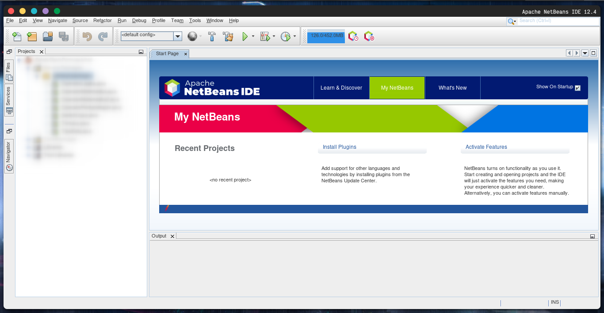

21 Agustus 2021
Bismillah,
Halo teman-teman!,
Kali ini masalah yang dihadapi yaitu font pada netbeans yang rusak, kata lainnya tidak smooth.
Hal tersebut karena netbeans dibuat dengan Java, sehingga font pada netbeans diatur oleh Java.
Langkah yang perlu dilakukan adalah menambah config pada folder .netbeans,
~/.netbeans/version/etc/netbeans.conf
dengan isian config:
nb: jika file tsb tidak ada, teman-teman buat dulu filenya,
lalu teman-teman buka kembali aplikasi netbeansnya!
